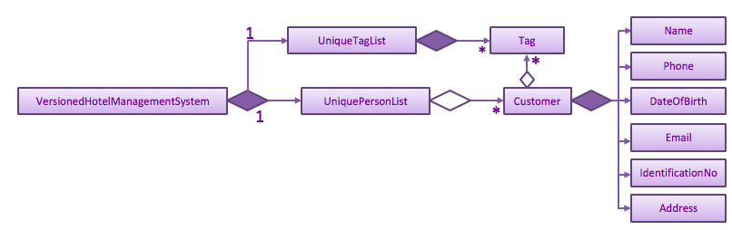

By: Team T12-1 Since: Feb 2019 Licence: MIT
1. Introduction
HMS+ is a Hotel Management System software that act as a single, highly customizable integrated system to manage all aspects of a hotelier’s requirements. This guide aims to help all developers get familiar with the codebase and teach them how to build upon it.
There are many ways to contribute towards the development of the software: coding, testing, improving the build process and tools or contributing to the documentation. This guide provides information that will not only help you get started as a contributor, but that you’ll find useful to refer to even if you are already an experienced contributor.
2. Setting up
Follow the simple steps below to set up the software and get it running for your system.
2.1. Prerequisites
-
JDK
9or laterJDK 10on Windows will fail to run tests in headless mode due to a JavaFX bug. Windows developers are highly recommended to use JDK9. -
IntelliJ IDE
IntelliJ by default has Gradle and JavaFx plugins installed.
Do not disable them. If you have disabled them, go toFile>Settings>Pluginsto re-enable them. You can install AsciiDoc for live rendering of documentation.
2.2. Setting up the project in your computer
-
Fork this repo, and clone the fork to your computer
-
Open IntelliJ (if you are not in the welcome screen, click
File>Close Projectto close the existing project dialog first) -
Set up the correct JDK version for Gradle
-
Click
Configure>Project Defaults>Project Structure -
Click
New…and find the directory of the JDK
-
-
Click
Import Project -
Locate the
build.gradlefile and select it. ClickOK -
Click
Open as Project -
Click
OKto accept the default settings -
Open a console and run the command
gradlew processResources(Mac/Linux:./gradlew processResources). It should finish with theBUILD SUCCESSFULmessage.
This will generate all resources required by the application and tests. -
Open
MainWindow.javaand check for any code errors-
Due to an ongoing issue with some of the newer versions of IntelliJ, code errors may be detected even if the project can be built and run successfully
-
To resolve this, place your cursor over any of the code section highlighted in red. Press ALT+ENTER, and select
Add '--add-modules=…' to module compiler optionsfor each error
-
-
Repeat this for the test folder as well (e.g. check
HelpWindowTest.javafor code errors, and if so, resolve it the same way)
2.3. Verifying the setup
-
Run the
seedu.hms.MainAppand try a few commands -
Run the tests to ensure they all pass.
2.4. Configurations to do before writing code
2.4.1. Configuring the coding style
This project follows oss-generic coding standards. IntelliJ’s default style is mostly compliant with ours but it uses a different import order from ours. To rectify,
-
Go to
File>Settings…(Windows/Linux), orIntelliJ IDEA>Preferences…(macOS) -
Select
Editor>Code Style>Java -
Click on the
Importstab to set the order-
For
Class count to use import with '*'andNames count to use static import with '*': Set to999to prevent IntelliJ from contracting the import statements -
For
Import Layout: The order isimport static all other imports,import java.*,import javax.*,import org.*,import com.*,import all other imports. Add a<blank line>between eachimport
-
Optionally, you can follow the UsingCheckstyle.adoc document to configure Intellij to check style-compliance as you write code.
2.4.2. Setting up CI
Set up Travis to perform Continuous Integration (CI) for your fork. See UsingTravis.adoc to learn how to set it up.
After setting up Travis, you can optionally set up coverage reporting for your team fork (see UsingCoveralls.adoc).
| Coverage reporting could be useful for a team repository that hosts the final version but it is not that useful for your personal fork. |
Optionally, you can set up AppVeyor as a second CI (see UsingAppVeyor.adoc).
| Having both Travis and AppVeyor ensures your App works on both Unix-based platforms and Windows-based platforms (Travis is Unix-based and AppVeyor is Windows-based) |
2.4.3. Getting started with coding
When you are ready to start coding,
-
Get some sense of the overall design by reading Section 3.1, “Architecture”.
-
Take a look at Appendix A, Suggested Programming Tasks to Get Started.
3. Design
3.1. Architecture
The Architecture Diagram given above explains the high-level design of the App. It is designed to illustrate and identify the high level architecture systems used to design and implement the HMS+ Application.
The .pptx files used to create diagrams in this document can be found in the diagrams folder. To update a diagram, modify the diagram in the pptx file, select the objects of the diagram, and choose Save as picture.
|
Given below is a quick overview of each component.
Main has only one class called MainApp. It is responsible for,
-
At app launch: Initializes the components in the correct sequence, and connects them up with each other.
-
At shut down: Shuts down the components and invokes cleanup method where necessary.
Commons represents a collection of classes used by multiple other components.
The following class plays an important role at the architecture level:
-
LogsCenter: Used by many classes to write log messages to the App’s log file.
The rest of the App consists of four components.
Each of the four components
-
Defines its API in an
interfacewith the same name as the Component. -
Exposes its functionality using a
{Component Name}Managerclass.
How the architecture components interact with each other
The Sequence Diagram below shows how the components interact with each other for the scenario where the user issues the command delete-customer 1.
delete-customer 1 commandThe sections below give more details of each component.
3.2. UI component

API : Ui.java
The UI consists of a MainWindow that is made up of parts e.g.StatsWindow, HelpWindow, ResultDisplay, CustomerListPanel, StatusBarFooter etc.
All these, including the MainWindow, inherit from the abstract UiPart class.
The UI component uses JavaFx UI framework. The layout of these UI parts are defined in matching .fxml files that are in the src/main/resources/view folder. For example, the layout of the MainWindow is specified in MainWindow.fxml
3.2.1. How the UI executes commands
This is handled by function executeCommand defined in MainWindow.
The function executeCommand will be passed in CommandBox as a functional interface CommandExecutor which is defined in CommandBox.
When adding text in CommandBox and pressed Enter, the command text will be passed to Logic component and be parsed and executed.
3.2.2. How the UI updates itself
This is handled by the InvalidationListenerManager.
It is basically a list of InvalidationListeners linked to three lists - UniqueCustomerList, BookingList, ReservationList, RoomTypeList and ServiceTypeList.
A listener is added for each of the five lists when the HotelManagementSystem is set up using the
addListener() method.
Whenever a change is made to any of these five lists of the HotelManagementSystem, all the listeners are called
using the indicateModified() method.
Thus, the internal listeners when called update the UI automatically.
How the UI automatically filter by selected service type
This is handled by the listener for selected serviceType/roomType inside the booking/reservation list panel. If the selected one is changed, the booking/reservation list panel will run a find command so that the list will be updated accordingly.
How the UI automatically switch tab
The BookingAndReservationPanel and ServiceTypeAndRoomType panel are numbered as 1 and 2. And the tabs inside them are numbered accordingly also.
To switch to a certain tab, we need to specify which tab in which panel we want to go. There are two listeners for the two panel.
If the selected tab is changed, the panel will switch accordingly. The selected tab can be changed by click and switch command.
The selected tab will also be changed accordingly if the command executed is a ReservationCommand or a BookingCommand.
3.3. Logic component
API :
Logic.java
Logic uses the HotelManagementSystemParser class to parse the user command and invoke the
relevant {Command Name}Parser class.
This results in a Command object which is executed by the LogicManager using the
CustomerModel,BookingModel, etc. based on the type of command.
Therefore command execution can affect the CustomerModel,BookingModel, etc.
(e.g. adding a customer / editing a booking). Given below is the structure of the command classes.
The result of the command execution is encapsulated as a CommandResult object which is passed back to the UI.
In addition, the CommandResult object can also instruct the User-Interface to perform certain actions, such as displaying help to the user.
3.3.1. Statistics
The statistics features are implemented as a part of the Logic component, since it gathers information from all the models.
The Stats object is a singleton that controls all calculations and updating of the individual items of the statistics.
The StatsItem objects represent individual items to be displayed, e.g. the most popular room types and service types are two different StatsItem.
The ShowStatsCommand emits a message for the MainWindow to open up a new StatsWindow and update its content.
Stats
The Stats object takes charge of all aspects of the statistics feature by doing the following:
-
Maintains a reference to the HMS.
-
Maintains a list of
StatItemto be calculated. -
Maintains a list for items that needs to be shown.
-
Provides a way for the items to be exported to one text report, which would show up in the
StatsWindow. -
Provides a way to update everything that needs to be shown.
The Stats object is designed in a modular way.
If one wants to add a new StatsItem, they simply need to add a new instance of that StatsItem to the items list.
Everything else will be taken care of, including calculating and displaying.
StatsItem
StatsItem objects are individual items to be computed, or, small fields in the reports. The following information is stored in each StatsItem:
-
The title of the item is stored in a
String. -
The results of the stats are stored in a
Map<String, Long>. -
The way to calculate the stats should be defined in the
calcResultsfunction, which would return thatMap<String, Long>. -
A
longestvariable which contains the length of the longest string in the keys of the map. This is useful in formatting.
The abstract class also provides a few utility functions for easier creation of new StatItem:
- count which turns an observable list (the returned value from all models) to a map of counting, in a way defined by the function provided.
- updateLongest which iterates through the list and updates the longest variable.
- sortAndFormat whose name suggests what it does.
Usually, the developer only needs to provide the observable list and the function f for count. That f should transform items of the observable list into strings.
Then, count will iterate through the observable list, map each element into a string with f, and count how many times the strings have appeared.
For example, in the CountRoomTypes item, the observable list is the reservation list, and f maps each reservation into a string of its room type.
Many reservations can have the same room type, and then the result will be a Map<String, Long>, the strings of the room types being the key, and the number they appear being the value.
ShowStatsCommand
To implement the ShowStatsCommand, which needs to emit messages to the MainWindow, two new arguments for CommandResult are added.
One is a boolean value for whether the stats window should show up or not, the other a list for what items to display.
Apart from that, the static variable maxIndex is set by the Stats object, for what the maxIndex should be is not known until run time.
3.4. Model component
API : Model.java
The Model,
-
stores a
UserPrefobject that represents the user’s preferences. -
stores the Hotel Management System data.
-
exposes an unmodifiable
ObservableList<Customer/Booking/Reservation/RoomType/ServiceType>that can be 'observed' e.g. the UI can be bound to this list so that the UI automatically updates when the data in the list change. -
does not depend on any of the other three components.
-
The
Reservation/Booking/Customer modelsserve as the API for the application to modify theReservation/Booking/Customer data. -
The
Bill modelserves the API for the application to generate bills for the customer. It cannot modify data at all. It only has access toObservableListof the remaining models.
As a more OOP model, we can reference a ServiceType in Booking. This would allow the
Hotel Management System to only require one ServiceType instance per unique ServiceType,
instead of each Booking needing their own Service object.Another example is how we store a Tag list in Hotel Management System, which Customer can reference. This would allow Hotel Management System to only require one Tag object per unique Tag, instead of each Customer needing their own Tag object. An example of how such a model may look like is given below. |
3.5. Storage component

API : Storage.java
The Storage component,
-
can save
UserPrefobjects in json format and read it back. -
can save the Hotel Management System data in json format and read it back.
3.6. Common classes
Classes used by multiple components are in the seedu.hms.commons package.
4. Implementation
This section describes some noteworthy details on how certain features are implemented.
4.1. How to include a new model
4.1.1. Current Implementation using service booking
In general, when adding any new model and its related commands, you need to work on 3 components compulsorily - Logic, Model and Storage. The UI component is modified based on how you want the user to be able to interact with our newly added model.
You will start by working on the model component. You must create a more specific model which
implements the existing Model interface and create a manager for this model. This constitutes
the API for our new model how the Logic component will execute the commands related to the model.
For Booking, there is a BookingModel interface and a BookingManager class which
keeps track of a booking list. An 'observable booking list' is bounded to the UI using
listeners so that the UI can be updated as the list changes. While the interface is a means of exposing the
API, the manager class links with the system and performs the actions. We also create the relevant class files
to represent the model we are implementing. For example, for representing our list of reservations,
we create relevant classes like ReservationList, Reservation, DateRange, RoomType, etc.\
Then you need to add the command files and parser files so that the application can parse commands
related to the model and execute them. The commands have been separated for different models
by adding an interface in the middle. This interface makes sure the correct model is used to execute
those commands. For example, there is a CustomerCommand and a BookingCommand interface which
implements the Command interface. Moreover the CustomerCommand interface specifies that it uses
the CustomerModel to execute itself. Then each command (eg. AddBookingCommand, EditBookingCommand, etc.)
implements the BookingCommand interface. This makes sure that only the booking manager can be used to
execute these commands as well. You also need to add parser classes for each command you implement
(eg. AddBookingCommandParser). These classes are invoked in the HotelManagementSystemParser
to get back the CommandResult which is used by the UI.
If the new model needs to be stored, then you also need to define JSON adapted classes
to represent these models. The JsonSerializableHotelManagementSystem has a list of
JsonAdaptedCustomer and a list of JsonAdaptedBooking and these two lists are saved using
seedu.hms.commons.util.JsonUtil. For each model class, you need to define a JSON-adapted
class with a toModelType function so that the system can read the data back from the file.
The modifications in the UI for a new model depend heavily on the functionality it provides. For booking and reservations, a panel was added to display all the bookings/reservations which can be filtered based on different parameters. You can see the addition, updating and deletion of bookings in real-time in the UI as has been explained before.
4.1.2. Design Considerations
Aspect: How should the API be structured
-
Alternative 1 (current choice): Every model has a separate interface which implements the
Modelinterface-
Pros: Every model has access to the GUI and User Preferences.
-
Cons: Some models have unnecessary methods.
-
-
Alternative 2: All the model APIs will be separate and there will be no Model Interface.
-
Pros: Better separation and less scope for errors.
-
Cons: Lot of refactoring required.
-
4.2. Making a model customizable
4.2.1. Current Implementation
In this section a model is considered to be customizable if an instance of it can be:
-
Added
-
Edited
-
Deleted
-
Listed (or Displayed)
| You can relate this with the infamous CRUD cycle if you are familiar with it. |
Every model/manager has access to the HotelManagementSystem inside which resides all the
lists (BookingList, UniqueCustomerList, etc.). These lists have methods to add an item,
set or replace an item at a particular index and delete an item. Therefore, when you are
implementing a model and its list wrapper (Eg. ReservationList), you must include these functions.
You must also define equality between instances of a model created so that it is easy to find
an instance and replace it. Include an instance of your list inside the HotelManagementSystem
and add a listener to it to automatically update the UI every time the function indicateModified is called.
Based on the action, you might want to update the shown list using the updateFiltered#{Model Name}List method.
A sequence diagram is given below to make the following more clear.
add-customer4.2.2. Design Considerations
Aspect: Editing a model object
-
Alternative 1: Allowing objects to be edited
-
Pros: We avoid recreating new instances and will have better performance.
-
Cons: It is very hard to update the UI every time an object is added or updated.
-
-
Alternative 2 (current choice): Replacing objects with a new object with edited parameters
-
Pros: Lot of instances are created and we need to make sure the old object doesn’t reappear again.
-
Cons: It is easy to update the UI using a listener for each list.
-
4.3. Filtering service booking functionality
4.3.1. Current Implementation
To find and filter the service bookings, we need to work on Logic, Model and Storage components. We can start on the Logic component. According to the current implementation, a command can only take in one model — either a customer model or a booking model. Limited by this, we cannot get access to customer list and booking list at the same time in one command. To implement the function without changing the base abstraction, we used identification number to check whether the payer of the booking is the customer we are selecting instead of using the index of a customer. The reason we use identification number(ID) instead of name or other factors is that the ID of one customer is unique.
The FindBookingCommand involves the use of multiple components of the HMS+ application. The figure below shows the
high level Sequence Diagram for the FindBookingCommand.
find-booking id/A0176684J command4.3.2. Design Considerations
Aspect: How should the customer be stressed
-
Alternative 1 (current choice): Using identification number(ID) to check.
-
Pros: The command can be implemented as only getting access to one model.
-
Cons: The scalability of the program is low.
-
-
Alternative 2: Implementing new command interface which can interact with two models at the same time.
-
Pros: The scalability of the program is high
-
Cons: Requiring more work and the old abstraction may break.
-
4.4. Filtering Room Reservation functionality
4.4.1. Current Implementation
The finding a specific room reservation functionality is facilitated by the FindReservationCommand class and is used whenever
the hotel staff wants to find a specific reservation done by the customer. It reduces the tedious process that the hotel staff needs
to do and helps them find the reservation in one go. To facilitate this, it depends on the ReservationModel interface which
provides the API for the room reservation and room type component.
The FindReservationCommand extends from the ReservationCommand class which in turn extends from the Command class. This is
illustrated in the UML diagram shown below.

The FindReservationCommand involves the use of multiple components of the HMS+ application. The figure below shows the
high level Sequence Diagram for the FindReservationCommand.

find-reservation id/A0176684J commandAs seen from the above diagram, this command doesn’t affect storage at all as the purpose of this command is to just find a specific reservation.
The Logic is responsible for parsing FindReservationCommand. It return a FindReservationCommand object after parsing
the filters provided by the hotel staff.
The FindReservationCommand#execute() method invokes the updateFilteredList(reservationPredicate) method from the
ReservationModel.
The ReservationModel component filters the reservation list based on the filters given by the user and sends this filtered list
back to the Logic which in turn sends it back to the Ui for displaying the specific room reservation.
4.4.2. Design Consideration
Aspect: How to find the customer whose specific reservation is to be found
-
Alternative 1 (current choice): We use the customer’s identification number to find the particular customer
-
Pros: Identification number of a customer is unique making it easy to find the customer.
-
Cons: The extensibility of the program is low as it only uses identification number.
-
-
Alternative 2: We allow any customer field to be used as a filter.
-
Pros: The extensibility of the program is high as any customer field can be used a filter.
-
Cons: Filters for all customer fields need to be created and some customer fields like name or date of birth are not unique to customers.
-
Aspect: How to implement the command
-
Alternative 1 (current choice): The command only has access to
ReservationModelinterface and can therefore only be used to filter reservations.-
Pros: Follows the Single Responsibility Principle and maintains abstraction.
-
Cons: Each command only has access to one model, which causes scalability to low.
-
-
Alternative 2: Create an interface which allows commands to have access to two or more models together.
-
Pros: The scalability is high as each command can access various models.
-
Cons:: This might break abstraction and does not follow the Single Responsibility Principle.
-
4.5. Generating Bill for Customers
4.5.1. Current Implementation
The generate bill for customer functionality is facilitated by the GenerateBillForCustomerCommand class and is used whenever
the hotel staff wants to generate bills for its customers. It allows the hotel staff to generate bills for their customers in one
go. To facilitate this, it depends on the BillModel interface and the CustomerModel interface which provide the API
for the bill component.
The GenerateBillForCustomerCommand extends from the BillCommand class which in turn extends from the Command class. This is
illustrated in the UML diagram shown below.

The GenerateBillForCustomerCommand involves the use of multiple components of the HMS+ application. The figure below shows the
high level Sequence Diagram for the GenerateBillForCustomerCommand.

generate-bill-customer 1 commandAs seen from the above diagram, there is no storage created for the bill as a result of which the bill generated is never stored. Therefore, the bill needs to be generated every time.
The GenerateBillForCustomerCommandParser is responsible for parsing the command. It return an GenerateBillForCustomerCommand object after parsing the index
of the customer whose bill is to be generated. The figure below depicts the Sequence Diagram for interactions within the
Logic component for the execute(generate-bill-customer 1) API call.

generate-bill-customer 1 commandThe GenerateBillForCustomerCommand#execute() method invokes the updateBill(bill) method from the BillModel.
Complying with the rules of [abstraction], the Logic component calls on Model to handle the internal details for updating.
The code used for generating the booking bill for the customer is shown in the snippet below:
public HashMap<ServiceType, Pair<Double, Integer>> generateHashMapForBooking(ObservableList<Booking>
bookingObservableList) {
HashMap<ServiceType, Pair<Double, Integer>> bookingBill = new HashMap<>();
for (ServiceType st: serviceTypeList) {
bookingBill.put(st, generateTotalBillBasedOnServiceType(bookingObservableList, st));
}
return bookingBill;
}
private Pair<Double, Integer> generateTotalBillBasedOnServiceType(ObservableList<Booking> bookingObservableList,
ServiceType serviceType) {
int totalTime = 0;
double totalAmount = 0.0;
for (Booking booking : bookingObservableList) {
if ((booking.getService().equals(serviceType))) {
TimeRange timeRange = booking.getTiming();
int hoursBooked = timeRange.numOfHours();
totalTime = totalTime + hoursBooked;
double ratePerHour = booking.getService().getRatePerHour();
double amount = hoursBooked * ratePerHour;
totalAmount = totalAmount + amount;
}
}
return new Pair<>(totalAmount, totalTime);
}The reservation bill for the customer is also generated in the same manner and has therefore not been shown. The two bills are then combined and showed to the user.
4.5.2. Design Consideration
Aspect: How should bill generation be implemented
-
Alternative 1 (current choice): An entirely new model,
BillModelhas been implemented which helps in generating a bill.-
Pros: The
BillModelinterface can be extended to perform other functions related to bill generation if required. If new features get added, theBillModelwill help in extending them without hassle or changing already implemented functions. -
Cons: Initially, a lot of work needs to go in implementing the model.
-
-
Alternative 2: Adding functions to the
HotelManagementSystemclass which will generate the bill.-
Pros: Easy to implement. Takes less time and less work required.
-
Cons: Every-time a new feature is to be added, changes in the already implemented functions will also have to be done accordingly, creating more work.
-
4.5.3. Aspect: Memory storage for bill
-
Alternate 1 (current choice): Bill doesn’t get stored.
-
Pros: No work required to be done for storing the bills. Storage space is also saved.
-
Cons: While implementing new features that require history of bills, the system will not be able to provide it.
-
-
Alternative 2: Bill gets stored.
-
Pros: If bill history is required for a new feature, system will be able to provide it.
-
Cons: Storing of bills will create duplicates of most of the data, as bill uses only existing data to generate output to customer and doesn’t add any new data. As a result of this, if bill gets stored it will just create duplication of data and cost the user more space.
-
4.6. Clear functionality
4.6.1. Current Implementation
The clearing mechanism of HMS+ is facilitated by 5 different commands - ClearRoomTypeCommand, ClearServiceTypeCommand,
ClearReservationCommand,ClearBookingCommand and ClearHotelManagementSystemCommand - and each of these commands clear
specific parts of the database.
Let’s first understand which commands clears which part of the database.
-
ClearBookingCommandclears all the bookings from the database. -
ClearServiceTypeCommandclear all service types from the database. -
ClearReservationCommandclears all the reservations from the database. -
ClearRoomTypeCommandclear all room types from the database. -
ClearHotelManagementSystemCommandclears the entire database.
All the 5 commands have been implemented in the exact way. Therefore we will just go through the underlying structure of
the ClearHotelManagementSystemCommand.
Currently, the ClearHotelManagementSystemCommand extends from the Command class. The figure below shows the UML Diagram
for the ClearHotelManagementSystemCommand class.
4.7. Undo/Redo feature
4.7.1. Current Implementation
The undo/redo mechanism is facilitated by VersionedHotelManagementSystem.
It extends HotelManagementSystem with an undo/redo history, stored internally as an hotelManagementSystemStateList and currentStatePointer.
Additionally, it implements the following operations:
-
VersionedHotelManagementSystem#commit()— Saves the current hotel management system state in its history. -
VersionedHotelManagementSystem#undo()— Restores the previous hotel management system state from its history. -
VersionedHotelManagementSystem#redo()— Restores a previously undone hotel management system state from its history.
These operations are exposed in the Model interface as Model#commitHotelManagementSystem(), Model#undoHotelManagementSystem() and Model#redoHotelManagementSystem() respectively.
Given below is an example usage scenario and how the undo/redo mechanism behaves at each step.
Step 1. The user launches the application for the first time. The VersionedHotelManagementSystem will be initialized with the initial hotel management system state, and the currentStatePointer pointing to that single hotel management system state.
Step 2. The user executes delete 5 command to delete the 5th customer in the hotel management system. The delete command calls Model#commitHotelManagementSystem(), causing the modified state of the hotel management system after the delete 5 command executes to be saved in the hotelManagementSystemStateList, and the currentStatePointer is shifted to the newly inserted hotel management system state.
Step 3. The user executes add n/David … to add a new customer. The add command also calls Model#commitHotelManagementSystem(), causing another modified hotel management system state to be saved into the hotelManagementSystemStateList.
If a command fails its execution, it will not call Model#commitHotelManagementSystem(), so the hotel management system state will not be saved into the hotelManagementSystemStateList.
|
Step 4. The user now decides that adding the customer was a mistake, and decides to undo that action by executing the undo command. The undo command will call Model#undoHotelManagementSystem(), which will shift the currentStatePointer once to the left, pointing it to the previous hotel management system state, and restores the hotel management system to that state.
If the currentStatePointer is at index 0, pointing to the initial hotel management system state, then there are no previous hotel management system states to restore. The undo command uses Model#canUndoHotelManagementSystem() to check if this is the case. If so, it will return an error to the user rather than attempting to perform the undo.
|
The following sequence diagram shows how the undo operation works:
The redo command does the opposite — it calls Model#redoHotelManagementSystem(), which shifts the currentStatePointer once to the right, pointing to the previously undone state, and restores the hotel management system to that state.
If the currentStatePointer is at index hotelManagementSystemStateList.size() - 1, pointing to the latest hotel management system state, then there are no undone hotel management system states to restore. The redo command uses Model#canRedoHotelManagementSystem() to check if this is the case. If so, it will return an error to the user rather than attempting to perform the redo.
|
Step 5. The user then decides to execute the command list. Commands that do not modify the hotel management system, such as list, will usually not call Model#commitHotelManagementSystem(), Model#undoHotelManagementSystem() or Model#redoHotelManagementSystem(). Thus, the hotelManagementSystemStateList remains unchanged.
Step 6. The user executes clear, which calls Model#commitHotelManagementSystem(). Since the currentStatePointer is not pointing at the end of the hotelManagementSystemStateList, all hotel management system states after the currentStatePointer will be purged. We designed it this way because it no longer makes sense to redo the add n/David … command. This is the behavior that most modern desktop applications follow.
The following activity diagram summarizes what happens when a user executes a new command:
4.7.2. Design Considerations
Aspect: How undo & redo executes
-
Alternative 1 (current choice): Saves the entire hotel management system.
-
Pros: Easy to implement.
-
Cons: May have performance issues in terms of memory usage.
-
-
Alternative 2: Individual command knows how to undo/redo by itself.
-
Pros: Will use less memory (e.g. for
delete, just save the customer being deleted). -
Cons: We must ensure that the implementation of each individual command are correct.
-
Aspect: Data structure to support the undo/redo commands
-
Alternative 1 (current choice): Use a list to store the history of hotel management system states.
-
Pros: Easy for new Computer Science student undergraduates to understand, who are likely to be the new incoming developers of our project.
-
Cons: Logic is duplicated twice. For example, when a new command is executed, we must remember to update both
HistoryManagerandVersionedHotelManagementSystem.
-
-
Alternative 2: Use
HistoryManagerfor undo/redo-
Pros: We do not need to maintain a separate list, and just reuse what is already in the codebase.
-
Cons: Requires dealing with commands that have already been undone: We must remember to skip these commands. Violates Single Responsibility Principle and Separation of Concerns as
HistoryManagernow needs to do two different things.
-
4.8. Logging
We are using java.util.logging package for logging. The LogsCenter class is used to manage the logging levels and logging destinations.
-
The logging level can be controlled using the
logLevelsetting in the configuration file (See Section 4.9, “Configuration”) -
The
Loggerfor a class can be obtained usingLogsCenter.getLogger(Class)which will log messages according to the specified logging level -
Currently log messages are output through:
Consoleand to a.logfile.
Logging Levels
-
SEVERE: Critical problem detected which may possibly cause the termination of the application -
WARNING: Can continue, but with caution -
INFO: Information showing the noteworthy actions by the App -
FINE: Details that is not usually noteworthy but may be useful in debugging e.g. print the actual list instead of just its size
4.9. Configuration
Certain properties of the application can be controlled (e.g user prefs file location, logging level) through the configuration file (default: config.json).
5. Documentation
We use asciidoc for writing documentation.
| We chose asciidoc over Markdown because asciidoc, although a bit more complex than Markdown, provides more flexibility in formatting. |
5.1. Editing Documentation
See UsingGradle.adoc to learn how to render .adoc files locally to preview the end result of your edits.
Alternatively, you can download the AsciiDoc plugin for IntelliJ, which allows you to preview the changes you have made to your .adoc files in real-time.
5.2. Publishing Documentation
See UsingTravis.adoc to learn how to deploy GitHub Pages using Travis.
5.3. Converting Documentation to PDF format
We use Google Chrome for converting documentation to PDF format, as Chrome’s PDF engine preserves hyperlinks used in web pages.
Here are the steps to convert the project documentation files to PDF format.
-
Follow the instructions in UsingGradle.adoc to convert the AsciiDoc files in the
docs/directory to HTML format. -
Go to your generated HTML files in the
build/docsfolder, right click on them and selectOpen with→Google Chrome. -
Within Chrome, click on the
Printoption in Chrome’s menu. -
Set the destination to
Save as PDF, then clickSaveto save a copy of the file in PDF format. For best results, use the settings indicated in the screenshot below.

5.4. Site-wide Documentation Settings
The build.gradle file specifies some project-specific asciidoc attributes which affects how all documentation files within this project are rendered.
Attributes left unset in the build.gradle file will use their default value, if any.
|
| Attribute name | Description | Default value |
|---|---|---|
|
The name of the website. If set, the name will be displayed near the top of the page. |
not set |
|
URL to the site’s repository on GitHub. Setting this will add a "View on GitHub" link in the navigation bar. |
not set |
|
Define this attribute if the project is an official SE-EDU project. This will render the SE-EDU navigation bar at the top of the page, and add some SE-EDU-specific navigation items. |
not set |
5.5. Per-file Documentation Settings
Each .adoc file may also specify some file-specific asciidoc attributes which affects how the file is rendered.
Asciidoctor’s built-in attributes may be specified and used as well.
Attributes left unset in .adoc files will use their default value, if any.
|
| Attribute name | Description | Default value |
|---|---|---|
|
Site section that the document belongs to.
This will cause the associated item in the navigation bar to be highlighted.
One of: * Official SE-EDU projects only |
not set |
|
Set this attribute to remove the site navigation bar. |
not set |
5.6. Site Template
The files in docs/stylesheets are the CSS stylesheets of the site.
You can modify them to change some properties of the site’s design.
The files in docs/templates controls the rendering of .adoc files into HTML5.
These template files are written in a mixture of Ruby and Slim.
|
Modifying the template files in |
6. Testing
Testing your application is an integral part of the app development process. Testing allows you to verify the correctness, functional behaviour, and usability of your app before you release it publicly.
Consider this. You have just implemented a new feature and want to test it. Or you want to add tests for an existing feature because you have decided that there are not enough tests. But the problem arises, when you have to think about where to start. What code or features do the current tests test? Do these overlap? Therefore, in short, you have to decide where to implement your new tests and what to cover in them.
This document is a starting point for you, the contributors and the developers, to understand about the automated tests implemented and how to run them.
Below you will find a short summary on the kind of tests already implemented and how to run them.
6.1. Running Tests
There are three ways you can run tests in.
| The most reliable way to run tests is the 3rd one. The first two methods might fail some GUI tests due to platform/resolution-specific idiosyncrasies. |
Method 1: Using IntelliJ JUnit test runner
-
To run all tests, right-click on the
src/test/javafolder and chooseRun 'All Tests'. Currently it covers Customer and Booking related functions. -
To run a subset of tests, you can right-click on a test package, test class, or a test and choose
Run 'ABC'
Method 2: Using Gradle
-
Open a console and run the command
gradlew clean allTests(Mac/Linux:./gradlew clean allTests)
| See UsingGradle.adoc for more info on how to run tests using Gradle. |
Method 3: Using Gradle (headless)
Thanks to the TestFX library we use, our GUI tests can be run in the headless mode. In the headless mode, GUI tests do not show up on the screen. That means the developer can do other things on the Computer while the tests are running.
To run tests in headless mode, open a console and run the command gradlew clean headless allTests (Mac/Linux: ./gradlew clean headless allTests)
6.2. Types of tests
We have two types of tests:
-
GUI Tests - These are tests involving the GUI. They include,
-
System Tests that test the entire App by simulating user actions on the GUI. These are in the
systemtestspackage. -
Unit tests that test the individual components. These are in
seedu.hms.uipackage.
-
-
Non-GUI Tests - These are tests not involving the GUI. They include,
-
Unit tests targeting the lowest level methods/classes.
e.g.seedu.hms.commons.StringUtilTest -
Integration tests that are checking the integration of multiple code units (those code units are assumed to be working).
e.g.seedu.hms.storage.StorageManagerTest -
Hybrids of unit and integration tests. These test are checking multiple code units as well as how the are connected together.
e.g.seedu.hms.logic.LogicManagerTest
-
6.3. Troubleshooting Testing
Problem: HelpWindowTest fails with a NullPointerException.
-
Reason: One of its dependencies,
HelpWindow.htmlinsrc/main/resources/docsis missing. -
Solution: Execute Gradle task
processResources.
7. Dev Ops
7.1. Build Automation
See UsingGradle.adoc to learn how to use Gradle for build automation.
7.2. Continuous Integration
We use Travis CI and AppVeyor to perform Continuous Integration on our projects. See UsingTravis.adoc and UsingAppVeyor.adoc for more details.
7.3. Coverage Reporting
We use Coveralls to track the code coverage of our projects. See UsingCoveralls.adoc for more details.
7.4. Documentation Previews
When a pull request has changes to asciidoc files, you can use Netlify to see a preview of how the HTML version of those asciidoc files will look like when the pull request is merged. See UsingNetlify.adoc for more details.
7.5. Making a Release
Here are the steps to create a new release.
-
Update the version number in
MainApp.java. -
Generate a JAR file using Gradle.
-
Tag the repo with the version number. e.g.
v0.1 -
Create a new release using GitHub and upload the JAR file you created.
7.6. Managing Dependencies
A project often depends on third-party libraries. For example, Hotel Management System depends on the Jackson library for JSON parsing. Managing these dependencies can be automated using Gradle. For example, Gradle can download the dependencies automatically, which is better than these alternatives:
-
Include those libraries in the repo (this bloats the repo size)
-
Require developers to download those libraries manually (this creates extra work for developers)
Appendix A: Suggested Programming Tasks to Get Started
Suggested path for new programmers:
-
First, add small local-impact (i.e. the impact of the change does not go beyond the component) enhancements to one component at a time. Some suggestions are given in Section A.1, “Improving each component”.
-
Next, add a feature that touches multiple components to learn how to implement an end-to-end feature across all components. Section A.2, “Creating a new command:
remark” explains how to go about adding such a feature.
A.1. Improving each component
Each individual exercise in this section is component-based (i.e. you would not need to modify the other components to get it to work).
Logic component
Scenario: You are in charge of logic. During dog-fooding, your team realize that it is troublesome for the user to type the whole command in order to execute a command. Your team devise some strategies to help cut down the amount of typing necessary, and one of the suggestions was to implement aliases for the command words. Your job is to implement such aliases.
Do take a look at Section 3.3, “Logic component” before attempting to modify the Logic component.
|
-
Add a shorthand equivalent alias for each of the individual commands. For example, besides typing
clear, the user can also typecto remove all customers in the list.
Model component
Scenario: You are in charge of model. One day, the logic-in-charge approaches you for help. He wants to implement a command such that the user is able to remove a particular tag from everyone in the hotel management system, but the model API does not support such a functionality at the moment. Your job is to implement an API method, so that your teammate can use your API to implement his command.
Do take a look at Section 3.4, “Model component” before attempting to modify the Model component.
|
-
Add a
removeTag(Tag)method. The specified tag will be removed from everyone in the hotel management system.
Ui component
Scenario: You are in charge of ui. During a beta testing session, your team is observing how the users use your hotel management system application. You realize that one of the users occasionally tries to delete non-existent tags from a contact, because the tags all look the same visually, and the user got confused. Another user made a typing mistake in his command, but did not realize he had done so because the error message wasn’t prominent enough. A third user keeps scrolling down the list, because he keeps forgetting the index of the last customer in the list. Your job is to implement improvements to the UI to solve all these problems.
Do take a look at Section 3.2, “UI component” before attempting to modify the UI component.
|
-
Use different colors for different tags inside customer cards. For example,
friendstags can be all in brown, andcolleaguestags can be all in yellow.Before

After

-
Modify
NewResultAvailableEventsuch thatResultDisplaycan show a different style on error (currently it shows the same regardless of errors).Before

After

-
Modify the
StatusBarFooterto show the total number of people in the hotel management system.Before

After

Storage component
Scenario: You are in charge of storage. For your next project milestone, your team plans to implement a new feature of saving the hotel management system to the cloud. However, the current implementation of the application constantly saves the hotel management system after the execution of each command, which is not ideal if the user is working on limited internet connection. Your team decided that the application should instead save the changes to a temporary local backup file first, and only upload to the cloud after the user closes the application. Your job is to implement a backup API for the hotel management system storage.
Do take a look at Section 3.5, “Storage component” before attempting to modify the Storage component.
|
-
Add a new method
backupHotelManagementSystem(ReadOnlyHotelManagementSystem), so that the hotel management system can be saved in a fixed temporary location.
A.2. Creating a new command: remark
By creating this command, you will get a chance to learn how to implement a feature end-to-end, touching all major components of the app.
Scenario: You are a software maintainer for HMS+, as the former developer team has moved on to new projects. The current users of your application have a list of new feature requests that they hope the software will eventually have. The most popular request is to allow adding additional comments/notes about a particular contact, by providing a flexible remark field for each contact, rather than relying on tags alone. After designing the specification for the remark command, you are convinced that this feature is worth implementing. Your job is to implement the remark command.
A.2.1. Description
Edits the remark for a customer specified in the INDEX.
Format: remark INDEX r/[REMARK]
Examples:
-
remark 1 r/Likes to drink coffee.
Edits the remark for the first customer toLikes to drink coffee. -
remark 1 r/
Removes the remark for the first customer.
A.2.2. Step-by-step Instructions
[Step 1] Logic: Teach the app to accept 'remark' which does nothing
Let’s start by teaching the application how to parse a remark command. We will add the logic of remark later.
Main:
-
Add a
RemarkCommandthat extendsCommand. Upon execution, it should just throw anException. -
Modify
HotelManagementSystemParserto accept aRemarkCommand.
Tests:
-
Add
RemarkCommandTestthat tests thatexecute()throws an Exception. -
Add new test method to
HotelManagementSystemParserTest, which tests that typing "remark" returns an instance ofRemarkCommand.
[Step 2] Logic: Teach the app to accept 'remark' arguments
Let’s teach the application to parse arguments that our remark command will accept. E.g. 1 r/Likes to drink coffee.
Main:
-
Modify
RemarkCommandto take in anIndexandStringand print those two parameters as the error message. -
Add
RemarkCommandParserthat knows how to parse two arguments, one index and one with prefix 'r/'. -
Modify
HotelManagementSystemParserto use the newly implementedRemarkCommandParser.
Tests:
-
Modify
RemarkCommandTestto test theRemarkCommand#equals()method. -
Add
RemarkCommandParserTestthat tests different boundary values forRemarkCommandParser. -
Modify
HotelManagementSystemParserTestto test that the correct command is generated according to the user input.
[Step 3] Ui: Add a placeholder for remark in CustomerCard
Let’s add a placeholder on all our CustomerCard s to display a remark for each customer later.
Main:
-
Add a
Labelwith any random text insideCustomerListCard.fxml. -
Add FXML annotation in
CustomerCardto tie the variable to the actual label.
Tests:
-
Modify
CustomerCardHandleso that future tests can read the contents of the remark label.
[Step 4] Model: Add Remark class
We have to properly encapsulate the remark in our Customer class. Instead of just using a String, let’s follow the conventional class structure that the codebase already uses by adding a Remark class.
Main:
-
Add
Remarkto model component (you can copy fromAddress, remove the regex and change the names accordingly). -
Modify
RemarkCommandto now take in aRemarkinstead of aString.
Tests:
-
Add test for
Remark, to test theRemark#equals()method.
[Step 5] Model: Modify Customer to support a Remark field
Now we have the Remark class, we need to actually use it inside Customer.
Main:
-
Add
getRemark()inCustomer. -
You may assume that the user will not be able to use the
addandeditcommands to modify the remarks field (i.e. the customer will be created without a remark). -
Modify
SampleDataUtilto add remarks for the sample data (delete yourdata/hotelManagementSystem.jsonso that the application will load the sample data when you launch it.)
[Step 6] Storage: Add Remark field to JsonAdaptedCustomer class
We now have Remark s for Customer s, but they will be gone when we exit the application. Let’s modify JsonAdaptedCustomer to include a Remark field so that it will be saved.
Main:
-
Add a new JSON field for
Remark.
Tests:
-
Fix
invalidAndValidCustomerHotelManagementSystem.json,typicalCustomersHotelManagementSystem.json,validHotelManagementSystem.jsonetc., such that the JSON tests will not fail due to a missingremarkfield.
[Step 6b] Test: Add withRemark() for CustomerBuilder
Since Customer can now have a Remark, we should add a helper method to CustomerBuilder, so that users are able to create remarks when building a Customer.
Tests:
-
Add a new method
withRemark()forCustomerBuilder. This method will create a newRemarkfor the customer that it is currently building. -
Try and use the method on any sample
CustomerinTypicalCustomers.
[Step 7] Ui: Connect Remark field to CustomerCard
Our remark label in CustomerCard is still a placeholder. Let’s bring it to life by binding it with the actual remark field.
Main:
-
Modify
CustomerCard's constructor to bind theRemarkfield to theCustomer's remark.
Tests:
-
Modify
GuiTestAssert#assertCardDisplaysCustomer(…)so that it will compare the now-functioning remark label.
[Step 8] Logic: Implement RemarkCommand#execute() logic
We now have everything set up… but we still can’t modify the remarks. Let’s finish it up by adding in actual logic for our remark command.
Main:
-
Replace the logic in
RemarkCommand#execute()(that currently just throws anException), with the actual logic to modify the remarks of a customer.
Tests:
-
Update
RemarkCommandTestto test that theexecute()logic works.
A.2.3. Full Solution
See this PR for the step-by-step solution.
Appendix B: Product Scope
HMS+ is targeted at hotels which want to use a single, highly customizable integrated system to manage all the aspects
their requirements.
Hotels have hundreds of customers with each customer having their own service bookings, room reservations and
their payments.
This is why these hotels use different software to keep a track of customer’s bookings and reservations and accordingly their payments. With time, it becomes difficult to keep a track of everything using different software.
HMS+ provides hotels with a one-stop shop for all their managerial and organization needs.
Target user profile:
-
Hoteliers
-
Hotel Management Staff
Value proposition: hotels can efficiently manage its entire database faster than a typical mouse/GUI driven app.
Appendix C: User Stories
User stories are short, simple descriptions of a feature told from the perspective of the user who desires the new capability. This will help the existing and new developers understand the importance of each feature and how does it help our user.
Priorities: High (must have) - * * *, Medium (nice to have) - * *, Low (unlikely to have) - *
| Priority | As a … | I want to … | So that I can… |
|---|---|---|---|
|
new hotel management staff |
see usage instructions |
refer to instructions when I forget how to use the App |
|
hotel management staff |
add a new customer |
add a room reservation or a service booking for the customer |
|
hotel management staff |
delete a customer |
remove a customer |
|
hotel management staff |
edit a customer |
update details of an already existing customer |
|
hotel management staff |
find a customer by name |
locate details of customers without having to go through the entire list |
|
hotel management staff |
add a new room reservation |
allocate a room to a customer |
|
hotel management staff |
delete a room reservation |
remove a room reservation |
|
hotel management staff |
edit a room reservation |
update details of an already existing room reservation |
|
hotel management staff |
add a new service booking |
allocate a service to a customer |
|
hotel management staff |
delete a service booking |
remove a service booking |
|
hotel management staff |
edit a service booking |
update details of an already existing service booking |
|
hotel management staff |
generate bill |
show the customer the remaining he has to pay for his stay at the hotel |
|
hotel management staff |
sort reservations by date |
see closer reservations first |
|
hotel management staff |
sort customers by amount due |
see which customer owes more first |
|
hotel management staff |
view all room reservations |
know which rooms are occupied and when |
|
hotel management staff |
view all service bookings |
know which rooms are occupied and when |
|
hotel management staff |
view all customers |
know who all are customers in my hotel |
|
hotel management staff |
view services provided by hotel |
select which service to book for customer |
|
hotel management staff |
view room types provided by hotel |
select which room type to reserve for customer |
|
hotel management staff |
send people for cleaning a room |
get a room cleaned and ready for next customer |
|
hotel management staff |
upgrade a customer to VIP status |
give him VIP discounts |
|
hotel management staff |
add a new service |
expand my service range |
|
hotel management staff |
change rates of a service |
change their tariffs |
|
hotel management staff |
add a new room type |
expand my room type range |
|
hotel management staff |
change rates of a room type |
change their tariffs |
|
hotel management staff |
change capacity of a specific service |
expand/shrink a specific service |
|
hotel management staff |
sort customers by name |
locate a customer easily |
Appendix D: Use Cases
(For all use cases below, the System is the HMS+ and the Actor is the Hotel Staff, unless specified otherwise)
Use case: Add reservation
Main Success Scenario
-
The actor adds a reservation.
-
The system adds the reservation to its list of reservations.
Use case resumes at step 1.
Extensions
-
1a. The actor tries to add invalid reservation.
-
1a1. The system shows an error.
Steps 1 - 1a1 are repeated till a valid reservation is provided.
Use case ends.
-
Use case: Edit reservation
Main Success Scenario
-
The actor requests all the reservations in the system.
-
The system lists the reservations requested.
-
The actor requests to edit a reservation at a specified index.
-
The system edits the reservation.
Use case resumes at step 3.
Extensions
-
2a. The system has no reservations.
Use case ends.
-
3a. The index that the actor specified is invalid.
-
3a1. The system shows an error message.
Steps 3 - 3a1 are repeated till a valid index is provided.
-
Use case: List reservations
Main Success Scenario
-
The actor requests to see all the reservations in the system.
-
The system lists the reservations requested.
Use case: Delete reservation
Main Success Scenario
-
The actor requests all the reservations in the system.
-
The system lists the reservations requested.
-
The actor requests to delete a reservation at a specified index.
-
The system deletes the reservation.
Use case resumes at step 3.
Extensions
-
2a. The system has no reservations.
Use case ends.
-
3a. The index that the actor specified is invalid.
-
3a1. The system shows an error message.
Steps 3 - 3a1 are repeated till a valid index is provided.
-
Use case: Add booking
Main Success Scenario
-
The actor adds a booking.
-
The system adds the booking to its list of bookings.
Use case resumes at step 1.
Extensions
-
1a. The actor tries to add invalid booking.
-
1a1. The system shows an error.
Steps 1 - 1a1 are repeated till a valid booking is provided.
Use case ends.
-
Use case: Edit booking
Main Success Scenario
-
The actor requests all the bookings in the system.
-
The system lists the bookings requested.
-
The actor requests to edit a booking at a specified index.
-
The system edits the booking.
Use case resumes at step 3.
Extensions
-
2a. The system has no bookings.
Use case ends.
-
3a. The index that the actor specified is invalid.
-
3a1. The system shows an error message.
Steps 3 - 3a1 are repeated till a valid index is provided.
-
Use case: List bookings
Main Success Scenario
-
The actor requests to see all the bookings in the system.
-
The system lists the bookings requested.
Use case: Delete booking
Main Success Scenario
-
The actor requests all the bookings in the system.
-
The system lists the bookings requested.
-
The actor requests to delete a booking at a specified index.
-
The system deletes the booking.
Use case resumes at step 3.
Extensions
-
2a. The system has no bookings.
Use case ends.
-
3a. The index that the actor specified is invalid.
-
3a1. The system shows an error message.
Steps 3 - 3a1 are repeated till a valid index is provided.
-
Use case: Add room-type
Main Success Scenario
-
The actor adds a room-type.
-
The system adds the room-type to its list of room-types.
Use case resumes at step 1.
Extensions
-
1a. The actor tries to add invalid room-type.
-
1a1. The system shows an error.
Steps 1 - 1a1 are repeated till a valid room-type is provided.
Use case ends.
-
-
2a. The actor tries to add an already existing room type.
-
2a1. The system shows an error.
Steps 2 - 2a1 are repeated till a new room-type is provided.
Use case ends.
-
Use case: Edit room-type
Main Success Scenario
-
The actor requests all the room-types in the system.
-
The system lists the room-types requested.
-
The actor requests to edit a room-type at a specified index.
-
The system edits the room-type.
Use case resumes at step 3.
Extensions
-
2a. The system has no room-types.
Use case ends.
-
3a. The index that the actor specified is invalid.
-
3a1. The system shows an error message.
Steps 3 - 3a1 are repeated till a valid index is provided.
-
-
3b. The actor tries to edit the room type to an already existing room type.
-
3b1. The system shows an error.
Steps 3 - 3b1 are repeated till a new room-type is provided.
Use case ends.
-
Use case: Delete room-type
Main Success Scenario
-
The actor requests all the room-types in the system.
-
The system lists the room-types requested.
-
The actor requests to delete a room-type at a specified index.
-
The system deletes the room-type.
Use case resumes at step 3.
Extensions
-
2a. The system has no room-types.
Use case ends.
-
3a. The index that the actor specified is invalid.
-
3a1. The system shows an error message.
Steps 3 - 3a1 are repeated till a valid index is provided.
-
Use case: Add service
Main Success Scenario
-
The actor adds a service.
-
The system adds the service to its list of services.
Use case resumes at step 1.
Extensions
-
1a. The actor tries to add invalid service.
-
1a1. The system shows an error.
Steps 1 - 1a1 are repeated till a valid service is provided.
Use case ends.
-
-
2a. The actor tries to add an already existing room type.
-
2a1. The system shows an error.
Steps 2 - 2a1 are repeated till a new service is provided.
Use case ends.
-
Use case: Edit service
Main Success Scenario
-
The actor requests all the services in the system.
-
The system lists the services requested.
-
The actor requests to edit a service at a specified index.
-
The system edits the service.
Use case resumes at step 3.
Extensions
-
2a. The system has no services.
Use case ends.
-
3a. The index that the actor specified is invalid.
-
3a1. The system shows an error message.
Steps 3 - 3a1 are repeated till a valid index is provided.
-
-
3b. The actor tries to edit the room type to an already existing room type.
-
3b1. The system shows an error.
Steps 3 - 3b1 are repeated till a new service is provided.
Use case ends.
-
Use case: Delete service
Main Success Scenario
-
The actor requests all the services in the system.
-
The system lists the services requested.
-
The actor requests to delete a service at a specified index.
-
The system deletes the service.
Use case resumes at step 3.
Extensions
-
2a. The system has no services.
Use case ends.
-
3a. The index that the actor specified is invalid.
-
3a1. The system shows an error message.
Steps 3 - 3a1 are repeated till a valid index is provided.
-
D.1. Use case: Generate total bill for a specific customer
Main Success Scenario
-
The actor requests the list of all the customers.
-
The system lists all the customers.
-
The actor requests to generate total bill for a specific customer.
-
The system generates the total bill for that specific customer.
Extensions
-
2a. There are no customers
Use case ends.
-
3a. The command that the actor entered is invalid.
-
3a1. The system shows an error message that the command is invalid.
Use case resumes at step 3.
-
-
3b. The index that the actor selected is invalid.
-
3b1. The system shows an error message that the index is invalid.
Use case resumes at step 3.
-
-
3b. The index that the actor selected is wrong.
-
3b1. The system generates the bill for a different customer, not the intended one.
Use case resumes at step 3.
-
Use case: Generate booking bill for a specific customer
Main Success Scenario
-
The actor requests the list of all customers.
-
The system lists all the customers.
-
The actor requests to generate total bill for a specific customer.
-
The system generates the total bill for that specific customer.
Use case resumes at step 3
Extensions
-
2a. There are no customers
Use case ends.
-
3a. The command that the actor entered is invalid.
-
3a1. The system shows an error message that the command is invalid.
Use case resumes at step 3.
-
-
3b. The index that the actor selected is invalid.
-
3b1. The system shows an error message that the index is invalid.
Use case resumes at step 3.
-
-
3b. The index that the actor selected is wrong.
-
3b1. The system generates the booking bill for a different customer, not the intended one.
Use case resumes at step 3.
-
Use case: Finding the specific list of bookings
Main Success Scenario
-
The actor requests for the specific list of bookings.
-
The system shows the specific list of bookings.
Use case resumes at step 1.
Extensions
-
1a. The command that the actor entered is invalid.
-
1a1. The system shows an error message that the command is invalid.
Use case resumes at step 1.
-
-
1b. The identification number that the actor entered is in wrong format.
-
1b1. The system shows an error message that the identification number has been not entered in the correct format.
Use case resumes at step 1.
-
-
1c. The identification number that the actor entered is wrong.
-
1c1. The system shows the specific list of bookings with the wrong identification number.
Use case resumes at step 1.
-
Use cases for ServiceType and TimeRange can be created in a similar manner like steps 1b and 1c.
Use case: Finding the specific list of reservations
Main Success Scenario
-
The actor requests for the specific list of reservations.
-
The system shows the specific list of reservations.
Use case resumes at step 1.
Extensions
-
1a. The command that the actor entered is invalid.
-
1a1. The system shows an error message that the command is invalid.
Use case resumes at step 1.
-
-
1b. The identification number that the actor entered is in wrong format.
-
1b1. The system shows an error message that the identification number has been not entered in the correct format.
Use case resumes at step 1.
-
-
1c. The identification number that the actor entered is wrong.
-
1c1. The system shows the specific list of reservations with the wrong identification number.
Use case resumes at step 1.
-
Use cases for RoomType and DateRange can be created in a similar manner like steps 1b and 1c.
Use case: Clear all reservations
Main Success Scenario
-
The actor requests the list of all reservations.
-
The system shows the list of all reservations.
-
The actor requests to clear all reservations.
-
The system clears all the reservations.
Extensions
-
2a. The list of reservations is empty.
Use case ends.
-
3a. The command that the actor entered is invalid.
-
3a1. The system shows an error message that the command is invalid.
Use case resumes at step 3.
-
Use case: Clear all bookings
Main Success Scenario
-
The actor requests the list of all bookings.
-
The system shows the list of all bookings.
-
The actor requests to clear all bookings.
-
The system clears all the bookings.
Extensions
-
2a. The list of bookings is empty.
Use case ends.
-
3a. The command that the actor entered is invalid.
-
3a1. The system shows an error message that the command is invalid.
Use case resumes at step 3.
-
Appendix E: Non Functional Requirements
-
Should work on any mainstream OS as long as it has Java
9or higher installed. -
Should be able to hold up to 1000 customers without a noticeable sluggishness in performance for typical usage.
-
A user with above average typing speed for regular English text (i.e. not code, not system admin commands) should be able to accomplish most of the tasks faster using commands than using the mouse.
Appendix F: Glossary
- Abstraction
-
In Object-oriented Programming, abstraction is the mechanism by which users are provided with only the functionality, and not the implementation details. So, abstraction provides users with information on what an object does, rather than how it does it.
- Single Responsibility Principle
-
The single responsibility principle is a computer programming principle that states that every module, class, or function should have responsibility over a single part of the functionality provided by the software, and that responsibility should be entirely encapsulated by the class.
- CLI
-
Acronym for Command Line Interface. It is a purely text-based interface for software. User respond to visual prompts by typing single commands into the interface and receive results as text as well. For example: MS-DOS.
- GUI
-
Acronym for Graphical User Interface. In a GUI, the software interface consists of graphical icons, menus and/or other visual indicators to display information. Users can typically interact with these graphics, rather than just using text in the command line.
For example: All Windows operating systems have a GUI. - Customer
-
People who go to live in a hotel while they are on a vacation or stay-cation.
- Hotelier
-
They are owners of the hotel who had initially invested money and now share in its profits.
- Hotel Management Staff
-
People who work in a hotel to earn livelihood and are concerned with the day to day activities of the hotel.
- Bookings
-
These refer to services which are blocked and paid for by the customers for a certain number of hours for their leisure or entertainment.
For example: A customer can book a service like gym for 2 hours. - Reservations
-
These refer to rooms which are blocked and paid for by the customers for a certain number of days so that they can have an enjoyable stay in the hotel.
For example : A customer can reserve a room for 3 days. - Mainstream OS
-
Windows, Linux, Unix, OS-X
Appendix G: Instructions for Manual Testing
Given below are instructions to test the app manually.
| These instructions only provide a starting point for testers to work on; testers are expected to do more exploratory testing. |
G.1. Launch and Shutdown
-
Initial launch
-
Download the jar file and copy into an empty folder
-
Double-click the jar file
Expected: Shows the GUI with a set of sample contacts. The window size may not be optimum.
-
-
Saving window preferences
-
Resize the window to an optimum size. Move the window to a different location. Close the window.
-
Re-launch the app by double-clicking the jar file.
Expected: The most recent window size and location is retained.
-
G.2. Customers
G.2.1. Adding a customer
-
Adding a customer with the
add-customercommand.-
Test case:
add-customer
Expected: No customer is added. Error details shown in the status message. Status bar remains the same. -
Other incorrect commands to try:
addcustomer n/test name,addcustomer n/123 456… -
Test case:
add-customer …followed by the details of an existing customer
Expected: No customer is added. Message shows "This customer already exists in the hms book". Status bar remains the same.
-
G.2.2. Deleting a customer
-
Deleting a customer while all customers are listed.
-
Prerequisites: List all customers using the
list-customerscommand. Multiple customers in the list or at least 1. -
Test case:
delete-customer 1
Expected: First contact is deleted from the list. Details of the deleted contact shown in the status message. Timestamp in the status bar is updated. -
Test case:
delete-customer 0
Expected: No customer is deleted. Error details shown in the status message. Status bar remains the same. -
Other incorrect delete commands to try:
delete-customer,delete-customer x(where x is larger than the list size)…
Expected: Similar to previous.
-
G.3. Reservations
G.3.1. Adding a reservation
Adding a reservation with the add-reservation command
-
Test case:
add-reservation
Expected: No reservation is added. Error details shown in the status message. Status bar remains the same. -
Other incorrect commands to try:
add-reservation r/room-type,add-reservation r/room-type $/1… -
Test case:
add-reservation d/5/5/19 - 4/5/19 …followed by the remaining details+ Expected: No reservation is added. Error details regarding the date range are shown. Status bar remains the same. ..Other incorrect commands to try:add-reservation d/5/5/1 - 4/5/19 …,add-reservation d/5/13/19 - 4/5/19 …
G.3.2. Editing a reservation
=Editing a reservation with the edit-reservation command
-
Test case:
edit-reservation
Expected: No reservation is edited. Error details shown in the status message. Status bar remains the same. -
Test case:
edit-reservation 1 r/INVALID_ROOM_TYPE $/-1
Expected: No reservation is edited. Error details shown in the status message. Status bar remains the same. -
Other incorrect commands to try:
edit-reservation 1 r/SINGLE ROOM $/1000,edit-reservation 1 r/SINGLE ROOM c/-1 c/1000 -
Test case:
edit-reservation 1 d/5/5/19 - 4/5/19 …followed by the remaining details+ Expected: No reservation is edited. Error details regarding the date range are shown. Status bar remains the same.
G.3.3. Listing reservations
Listing all reservations with the list-reservation command
-
Test case:
list=reservations
Expected: All reservations are listed. Timestamp in the status bar is updated.
G.3.4. Deleting a reservation
Deleting a reservation while all reservations are listed
-
Prerequisites: List all reservations using the
list-reservationscommand. Multiple reservations in the list. -
Test case:
delete-reservation 1
Expected: First contact is deleted from the list. Details of the deleted contact shown in the status message. Timestamp in the status bar is updated. -
Test case:
delete-reservation 0
Expected: No reservation is deleted. Error details shown in the status message. Status bar remains the same. -
Other incorrect delete commands to try:
delete-reservation,delete-reservation x(where x is larger than the list size)…
Expected: Similar to previous.
G.4. Bookings
G.4.1. Adding a booking
Adding a booking with the add-booking command
-
Test case:
add-booking
Expected: No booking is added. Error details shown in the status message. Status bar remains the same. -
Other incorrect commands to try:
add-booking s/service-type,add-booking s/service-type $/1… -
Test case:
add-booking d/5/5/19 - 4/5/19 …followed by the remaining details+ Expected: No booking is added. Error details regarding the date range are shown. Status bar remains the same. ..Other incorrect commands to try:add-booking d/5/5/1 - 4/5/19 …,add-booking d/5/13/19 - 4/5/19 …
G.4.2. Editing a booking
=Editing a booking with the edit-booking command
-
Test case:
edit-booking
Expected: No booking is edited. Error details shown in the status message. Status bar remains the same. -
Test case:
edit-booking 1 s/INVALID_SERVICE_TYPE $/-1
Expected: No booking is edited. Error details shown in the status message. Status bar remains the same. -
Other incorrect commands to try:
edit-booking 1 s/GYM $/1000,edit-booking 1 s/GYM c/-1 c/1000 -
Test case:
edit-booking 1 :/22 - 25 …followed by the remaining details+ Expected: No booking is edited. Error details regarding the time range are shown. Status bar remains the same.
G.4.3. Listing bookings
Listing all bookings with the list-booking command
-
Test case:
list=bookings
Expected: All bookings are listed. Timestamp in the status bar is updated.
G.4.4. Deleting a booking
Deleting a booking while all bookings are listed
-
Prerequisites: List all bookings using the
list-bookingscommand. Multiple bookings in the list. -
Test case:
delete-booking 1
Expected: First contact is deleted from the list. Details of the deleted contact shown in the status message. Timestamp in the status bar is updated. -
Test case:
delete-booking 0
Expected: No booking is deleted. Error details shown in the status message. Status bar remains the same. -
Other incorrect delete commands to try:
delete-booking,delete-reservation x(where x is larger than the list size)…
Expected: Similar to previous.
G.5. Service Types
G.5.1. Adding a service Type
Adding a service Type with the add-service-type command
-
Test case:
add-service-type
Expected: No service type is added. Error details shown in the status message. Status bar remains the same. -
Other incorrect commands to try:
add-service-type n/name cap/-1… -
Test case:
add-service-type :/23 - 25 …followed by the remaining details+ Expected: No service type is added. Error details regarding the time range are shown. Status bar remains the same.
G.5.2. Editing a service type
=Editing a service type with the edit-service-type command
-
Test case:
edit-service-type
Expected: No service type is edited. Error details shown in the status message. Status bar remains the same. -
Test case:
edit-service-type 1 rate/-1
Expected: No service type is edited. Error details shown in the status message. Status bar remains the same. -
Other incorrect commands to try:
edit-service-type 1 cap/-1,edit-service-type rate/-2 -
Test case:
edit-service-type 1 :/22 - 25 …followed by the remaining details+ Expected: No service type is edited. Error details regarding the time range are shown. Status bar remains the same.
G.5.3. Deleting a service type
Deleting a service type while all service types are listed
-
Test case:
delete-service-type 1
Expected: First contact is deleted from the list. Details of the deleted contact shown in the status message. Timestamp in the status bar is updated. -
Test case:
delete-service-type 0
Expected: No service type is deleted. Error details shown in the status message. Status bar remains the same. -
Other incorrect delete commands to try:
delete-service-type,delete-reservation x(where x is larger than the list size)…
Expected: Similar to previous.
G.6. Room Types
G.6.1. Adding a room Type
Adding a room Type with the add-room-type command
-
Test case:
add-room-type
Expected: No room type is added. Error details shown in the status message. Status bar remains the same. -
Other incorrect commands to try:
add-room-type n/name cap/-1…
G.6.2. Editing a room type
=Editing a room type with the edit-room-type command
-
Test case:
edit-room-type
Expected: No room type is edited. Error details shown in the status message. Status bar remains the same. -
Test case:
edit-room-type 1 rate/-1
Expected: No room type is edited. Error details shown in the status message. Status bar remains the same. -
Other incorrect commands to try:
edit-room-type 1 cap/-1,edit-room-type rate/-2
G.6.3. Deleting a room type
Deleting a room type while all room types are listed
-
Test case:
delete-room-type 1
Expected: First contact is deleted from the list. Details of the deleted contact shown in the status message. Timestamp in the status bar is updated. -
Test case:
delete-room-type 0
Expected: No room type is deleted. Error details shown in the status message. Status bar remains the same. -
Other incorrect delete commands to try:
delete-room-type,delete-reservation x(where x is larger than the list size)…
Expected: Similar to previous.
G.7. Bill
G.7.1. Generating bill for a customer
-
Generating total bill for a customer based on index.
-
Prerequisites: At-least one customer who has at-least one booking or reservation in the database.
-
Test case:
gb-c
Expected: Bill is not generated. Error details shown in the status message. Status bar remains the same. -
Test case:
gb-c 1
Expected: Bill is generated for customer at index 1. The respective status message is displayed. Timestamp in the status bar is updated. -
Other incorrect generate bill for customer commands to try:
gbc,g-b-c,gb-c x(where x is larger than the list size)..
Expected: Bill is not generated. Error details shown in the status message. Status bar remains the same.
-
G.8. Generating booking bill for a customer.
-
Generating booking bill for a customer based on index, or service type, or booking hours.
-
Prerequisites: At-least one customer who has at least one booking in the database.
-
Test case:
gb-b
Expected: Bill is not generated. Error details shown in the status message. Status bar remains the same. -
Test case:
gb-b 1
Expected: Bill is generated for customer at index 1. The respective status message is displayed. Timestamp in the status bar is updated. -
Test case:
gb-b 1 s/GYM
Expected: Bill is generated for customer at index 1. The respective status message is displayed. Timestamp in the status bar is updated. -
Other incorrect generate bill for customer commands to try:
gbb,g-b-b,gb-b x(where x is larger than the list size)..
Expected: Bill is not generated. Error details shown in the status message. Status bar remains the same.
-
G.9. Switching tab
-
Switching tabs in the application.
-
Test case:
st 1 2
Expected : Switches to Reservation tab in first panel and the appropriate message is displayed. Status bar remains the same. -
Test case:
st 1 0
Expected : No switch is made. Error details shown in the status message. Status bar remains the same. -
Other incorrect switch tab commands to try:
st,st 1,st 1 2 3…
Expected: Similar to previous.
-